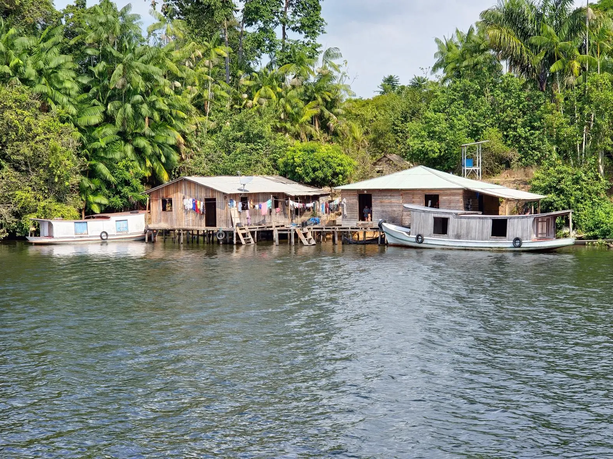

Few Issues of Nature
Scientists are increasingly learning how biodiversity loss and climate change compound and reinforce each other. For example, deforestation releases greenhouse gas emissions that fuel climate change, spurring wildfires and forest dieback that then release more emissions and cause further warming. It’s a vicious cycle that both accelerates and amplifies the extreme heat, drought, flooding and other impacts endangering communities around the world.
Just this year, the world saw major international summits to advance three global treaties: the Kunming-Montreal Biodiversity Framework, the Paris Agreement on climate change, and the UN Convention to Combat Desertification. The successive convenings brought needed attention to climate change and ecosystem degradation. But they also laid bare one of the biggest barriers to tackling these dual crises — siloed thinking .
Acting with Ambition for People
We witnessed the hottest year on record . Devastating floods took lives and destroyed homes in Brazil and Kenya — places where degraded landscapes make communities more vulnerable to heavy rainfall. Blistering heat caused heatstroke and deaths in India, Europe and the U.S. Wildfires scorched South America.
At the same time, agriculture and other industries continued their rampant destruction of nature. WRI analysis revealed that the world still loses 10 football fields of tropical primary forest every minute. A significant driver is production of the soy, beef, palm oil and other commodities we use every day. Not only does tree cover loss spew carbon emissions, it degrades the many benefits forests provide, such as clean water, foods, medicines and livelihoods.
People simply cannot thrive without healthy ecosystems and a stable climate. That’s why policymakers need to act ambitiously on climate and nature — together — in 2025.

Fishermen haul in their nets on the Amazon River in Peru Fishermen pull fish from the river in the Peruvian Amazon.
If you want to explore click here: More learnThere are several opportunities for them to do so:
- Countries’ next round of climate pledges.
- Continued negotiations on the global biodiversity treaty.
- System-changing domestic policies.
- COP30 in Belém, Brazil.
How You Can Help
WRI relies on the generosity of donors like you to turn research into action. You can support our work by making a gift today or exploring other ways to give.